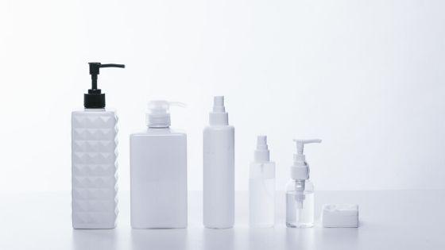

合わなかったら不安、とりあえず無料でお試ししたい！
NULC 薬用スリープロテクトジェル（オールインワンジェル）


スキンケア用品って結構値段するし失敗したくないよ・・
特にインターネットで買うのは試せないから不安だな・・
わかりますその気持ち。損したくないですよね。
でも安心してください。
NULC 薬用スリープロテクトジェル（オールインワンジェル）は購入して満足できなかった場合には全額返金されます。
万が一商品にご満足いただけない場合、全額返金させて頂きます。
商品の効果に半信半疑の方にも安心してお試し頂けます。
引用元：NULC 公式サイト

これはありがたい(*^^*)
アフターサービスも充実
とりあえずお試しで買ったけど使い方とかちゃんと聞きたい。
届いたけどこれおかしい。
など、購入後のトラブルにも安心なアフターサービスも！
アフターサービスで対応してくれるのはコスメコンシェルジュなのでとっても安心ですよ。
NULC 薬用スリープロテクトジェル（オールインワンジェル）トップ
リンク
NULC 薬用スリープロテクトジェル（オールインワンジェル）の効果
リンクNULC（ナルク）は新商品発売直前にプレゼントキャンペーンを実施
今回は残念ながら発売後なので無料プレゼントキャンペーンは終わってしまいました。
でも、次回の新作が出たときに無料でプレゼントしてもらうためにここの情報は要チェック。
Twitter（＠NalcOfficial）
Instagram（＠nalc_official）
NULC公式サイト
キャンペーンの反応
薬用というだけあってとても優しいです！乾燥しすぎててちょっと剥けてるところがあるんですけど、そこに塗ってもヒリヒリしない😳
— 玲愛 (@rea0509Y) November 28, 2019
しかもスっと伸びやすいし、ピターっとくっついて保湿してくれてる感じがするんです！すごい👏🏻
ベタベタじゃなくてサラサラ！とても使いやすくて良かったです❁
NALK薬用スリープロテクトジェル。
— Flowerlikerose (@flowerlikerose) November 21, 2019
当選したので
NALKさんからLINEで
住所と名前を書いて下さいとあり、記入しながらもまさか現品サイズがホントに送ってくる訳ないだろうと思っていたらキター！
日焼け止めがこちら神なので、このオールインワンは期待高まる！#NALK薬用スリープロテクトジェル pic.twitter.com/TFgQbnPY1m
当たるとうれしいですよね！次回こそは当てたい(*^^)v
無料でお試しまとめ
失敗するかも、損するかもって不安。
スキンケアを大切だと思うからこそ、まずは自分に合うか試したい。そしていいものが見つかれば使い続けたい。
そういう願いは誰でももっていますよね。
そんな中で合わなかった、思っていたのと違った、そんな時に全額返金してもらえるのは安心できます。
気になるけど合うかわからず迷っているのであれば一度試してみるのもいいと思いますよ。
- NULC 薬用スリープロテクトジェル（オールインワンジェル）トップ
- NULC 薬用スリープロテクトジェル（オールインワンジェル）の効果
- NULC 薬用スリープロテクトジェル（オールインワンジェル）の使い方
- NULC 薬用スリープロテクトジェル（オールインワンジェル）の使うタイミング
- NULC 薬用スリープロテクトジェル（オールインワンジェル）は乾燥肌でも大丈夫？
- NULC 薬用スリープロテクトジェル（オールインワンジェル）の評価・評判・口コミ
- NULC 薬用スリープロテクトジェル（オールインワンジェル）の値段は安い？
- NULC 薬用スリープロテクトジェル（オールインワンジェル）と人気のジェルを比較
- NULC 薬用スリープロテクトジェル（オールインワンジェル）は子供にも使える？
- NULC 薬用スリープロテクトジェル（オールインワンジェル）は無料でお試しはできる？
- NULC 薬用スリープロテクトジェル（オールインワンジェル）の会社ナルク（NULC）とは？